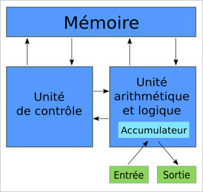

Activité#
Alice et Bob souhaitent acheter chacun un ordinateur portable.
Si vous deviez acheter un ordinateur portable, à quelles caractéristiques techniques feriez-vous attention ?
Comparer les deux modèles retenus par Alice et Bob:
Le site Versus a comparé les deux processeurs. Quelle est sa conclusion ?
Les ordinateurs actuels ont une architecture selon le modèle de « Von Neumann ».
Rechercher sur le web qui était Von Neumann.
On représente le modèle de l’architecture du modèle de Von Neumann de la façon suivante:
 Quelle partie de l’ordinateur représente le rectangle « Mémoire » ?
Quelle partie de l’ordinateur représente les carrés « Unité de contrôle » et « Unité arithmétique et logique » ?
Que représente les flèches sur le schéma ?